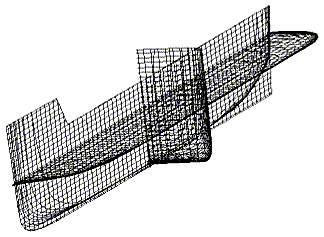
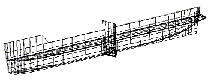
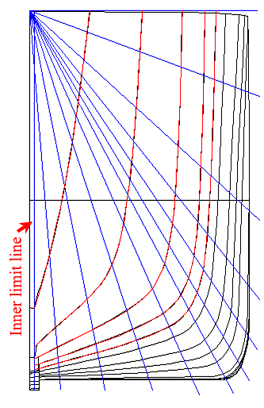
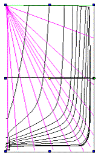
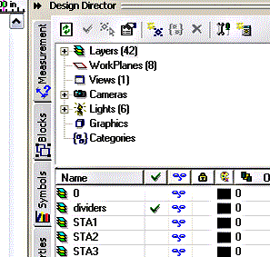

| HOME
Hull Lofting Tutorial: |
| Start: 0 Set the first dxf: 1 Paste other dxf's: 2 Loft profiles: 3 Loft test: 4 Loft Better: 5 Shelling: 6 Full Length: 7 Keel, Mirror & Render: 8 |
| Background: |
| The ship lines were created by Dr Allen Magnuson in Feb 2005 using Vacanti Prolines LE. The data was exported in 2D dxf format, then traced in TurboCad Pro 8.2. Hull is based on the proportions of Noah's Ark according to Genesis 6:15. Tutorial by Tim Lovett Feb 05. |
STEP 3: Set up loft profiles
1. Right Hand Side
- First of all, Save it.
- Now save again as a new name (to keep the old one safe). Like Ship002.tcw
- Now mirror the Body LHS to the RHS, then erase the old LHS. The fore & aft lines are now on top of each other on the RHS. It is easy to do this while still grouped in each half. See why we did it now?
- Now explode everything and you get this mess...

Test the layers. In Design Director (DD), hide a layer - you should see 3 corresponding curves disappear, which is really the one curve projected onto the 3 planes - plan, body and profile.
2. Simplify
There are a lot of lines here. If I was me, I'd chuck some. Keep a good accuracy near the busy areas of bow and stern, but throw away lots of stuff in the middle.
Delete station layers to keep only the following;
- Stations: 1,2,3,4,5,6,8,10,12,15,18,21,25,30,35,39,42,45,47,49,51,53,55,56,57,58,59,60
- Waterlines: 2,4,7,10,14,18
- Buttock lines: 1,2,4,6,8
- Chine

3. Spline Dividers
We are working almost exclusively with station lines, as these will form the section profiles for the hull loft. Turbocad is happiest when it has the same number of points for each loft profile (station). To help us do this we will sketch some radiating lines on the Body plane (amidships). We will use 12 points per section, which means 11 dividing lines radiating from the top centerline (Drawn in blue here - directly onto the Body workplane). The radiating lines are concentrated at the bilge radius to improve resolution at that spot.
Notice the vertical line set at the bow stem thickness (12th line). This will become the loft inside limit - which leaves a gap between LHS and RHS of the hull. The keel and stem will be added later as a separate object.

Pretty isn't it? Trouble is I forgot to tell you to put them on a new layer. Sorry... just kidding. CAD isn't this cruel. Now for our next trick....
4. Whoops. How to move stuff to another layer.
(This could come in handy!)
- In DD, make a new layer "dividers". BTW It's no fun having the new layer at the bottom of a big list, so drag it up near the top.
- Select the 12 divider lines (Hold down Shift as you pick them. This will flick you back to Level "0" - the default level they went on)

- While these are selected, simply make the "dividers" layer current. That's it. Hey Presto, easy peasy!

5. Splines setup
Each station curve (body line) will be a spline. In Turbocad we can set the mathematical resolution of spline. The default is 20 points between each control point (node), but we will reduce this to make the curves smoother. (Bit silly to have station control points so close together if the stations-to-station distance is so much larger).
Use the standard Properties Dialogue to get at the object's Properties (Like you do for everything else in TC). There are lots of ways to get to it;
From the Main Menu choose Format| Properties.
OR
Right-click anywhere in the drawing and select Properties from the Local Menu.
OR
Select the Properties icon in the lower left corner of the screen on the Inspector Bar.
OR
Set some Properties directly using the Properties toolbar. OR
Open the Properties Palette at the right of the screen. OR
When the Select tool is active, double click the object.
- Anyway, RB on blank screen area > Properties... > Curve > Set control points to 5 (default was 20). Set curve type to Spline. OK
- Oh, and make a new layer called "splines_fore". We'll draw the splines onto this later.
|
Tim Lovett © 2005 | All Rights Reserved| http://www.worldwideflood.com |